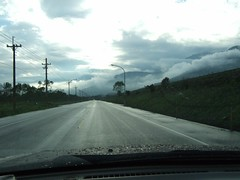
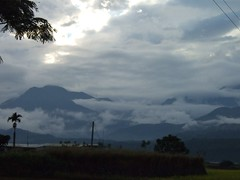
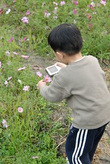
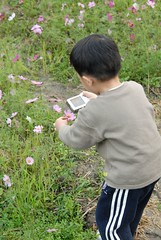
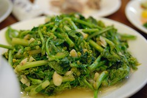
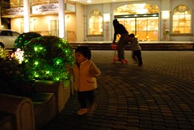

1/19 星期五 宜蘭礁溪 -> 花蓮市松園別館 -> 鳳林鎮林田山林場-> 瑞穗玉里間台193縣道 -> 台東關山鎮山水萱渡假村
離開林田山已是下午四點
得加速前往關山 今晚我們的下榻地嚕
駛在花東縱谷公路上 讓人很難不去注意到那千變萬化的雲
連阿徹都好奇且仔細的觀察雲朵的變化
一下喊著”好像火山爆發喔” 一下喊著”好像恐龍喔”
蹦出很多令人發噱的形容詞…
還興致勃勃的拿起媽媽的小3拍車上的SNOOPY跟天上的雲

天空很藍 白雲很白 很舒服 也更期待接下來的旅行
(可憐的小愛只能利用坐車時間盡量補眠)

車子經過瑞穗大橋 望見遠方天空露出的一道署光
感覺真棒 忍不住拿起相機咖嚓下去(徹爸我是故意照太陽的)
經過瑞穗大橋後轉入193縣道
賞油菜花的重點地段
網路上說會有接二連三黃澄澄的花田喔
好期待喔~ 
果然花田在我們的讚嘆聲下接二連三的出現
藍天 白雲 遠山 再配上黃澄澄的花田
心裡悸動的直告訴自己”這趟旅行真是值得了”
朝思暮想的花東油菜花田真的美呆了~
(可惜妹妹在車上睡覺 我沒能下車照相
只好拜託阿徹要讓爸爸在花田前面照相
小子照了一張後就說可以了 不给拍 ㄘㄟ~)


193縣道上不止有黃色的油菜花
還有顏色很均勻(紅色 白色 粉色相雜)的波斯菊花田
又忍不住的停下車拍照 (照這速度下去 包準得摸黑到關山了)
小愛也總算 剛好的醒來
OHYA~我也可以下車了
阿徹又盡責的讓爸爸在花田前拍了一張照(因為他在家裡答應爸爸出門要乖乖給拍照的)
然後拿起小3拍起小紅花
還幫爸爸媽媽妹妹拍了張合照ㄋ
構圖還真不錯 只可惜媽媽太緊張阿徹把我們的頭卡掉 所以表情有醜

 
 
看完一畦畦的花田 天也黑了
更該好好趕路了
阿徹開心的直唧唧咂咂的說東聊西
徹爸也開心的放起他最愛的韋瓦地音樂欣賞著
忍不住 我們請阿徹稍微閉起嘴巴 休息一下 享受一下音樂
跟阿徹說”這是白雪公主的音樂喔”
他竟然也相信了(哈哈 還真有點好騙 第三天還主動說要聽白雪公主的音樂ㄋ)
總算6點30分 我們抵達台東關山 山水軒渡假村嚕
因為是在旅遊展時上網買的旅遊卷
所以附有晚餐(其實買旅遊卷就是在相同房價下 多些吃吃喝喝的優待)
看到服務小姐送上第一道菜”人蔘雞”
我跟徹爸忍不住哇了一聲 看來這餐吃的不賴喔
果然陸續又上了 燉豬腳 銀杏蝦仁 炒油菜花 山藥排骨湯難得出門在外可以吃的這麼豐盛的
而且還看因為有小孩 刻意多做了兩份好吃的蒸蛋
真是讚讚讚

 
吃完飯 等著全家去泡藥草浴
於是在度假村的前庭跟阿徹玩起滑板車
阿徹要我站上滑板車 他從後頭推著我(感覺怪恐怖的 可見我多不相信他)
而小愛則是好奇的賞玩著各色燈泡

泡完澡回到房間看一下電視 準備上床睡覺喔
明天還有滿滿的行程喔~